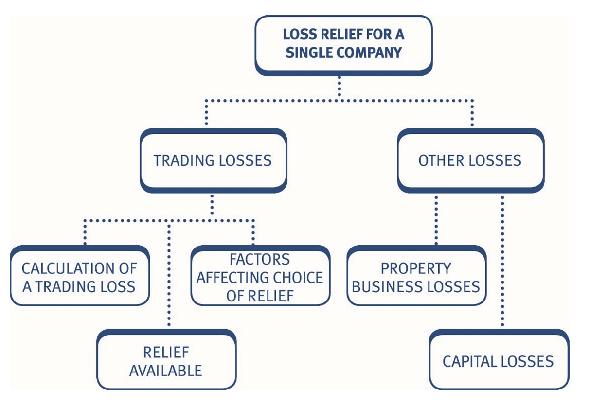
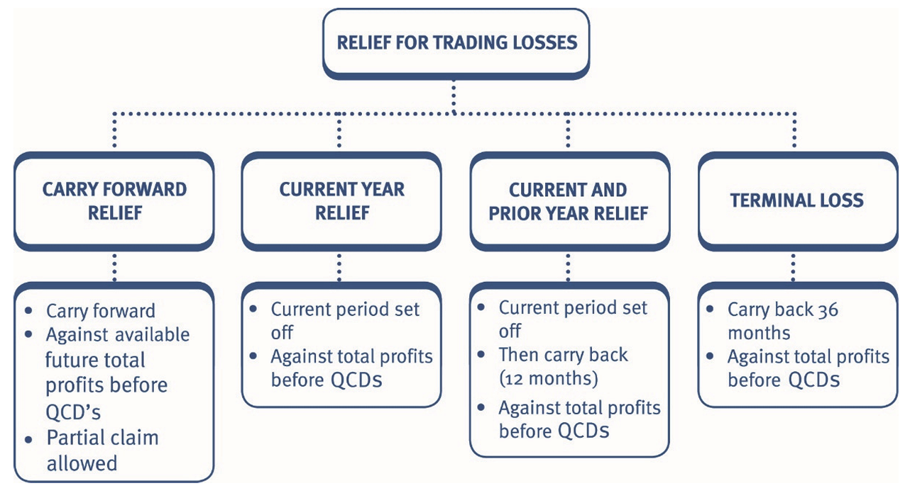
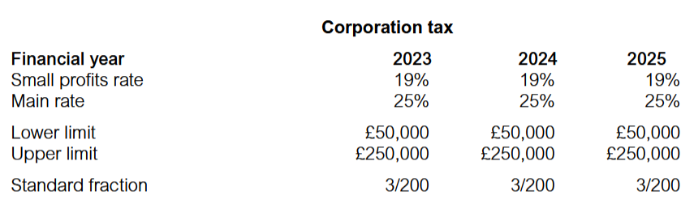

Chapter 14: Losses for companies
- understand how trading losses can be carried forward.
- understand how trading losses can be claimed against income of the current or previous accounting periods.
- recognise the factors that will influence the choice of loss relief claim.
- understand how relief for a property business loss is given.
- explain and compute the treatment of capital losses.

Trading losses
Calculation of a trading loss
Trading losses are computed in the same way as tax adjusted trading profits:
| £ | |
|---|---|
| Tax adjusted profit/(loss) | X/(X) |
| Less: Capital allowances | (X) |
| Adjusted trading loss | X |
If a company has made an adjusted trading loss, the tax adjusted trading profit shown in the TTP computation for that period is £Nil.
Example 1: Trading losses
Carlos Ltd had the following results for its year ended 31 August 2025:
| £ | £ | |
|---|---|---|
| Gross profit | 30,000 | |
| Less: Expenditure | ||
| Depreciation | (5,000) | |
| Allowable costs | (12,000) | |
| Total expenditure | (17,000) | |
| Profit before income taxes | 13,000 |
The capital allowances for the year amount to £21,000.
- Calculate the tax adjusted trading loss for the year ended 31 August 2025.
- Calculate the tax adjusted trading loss for the year ended 31 August 2025 assuming the facts are the same except that the company made a loss before income taxes of £10,000.
Solution
(a) Tax adjusted trading loss – y/e 31 August 2025
| £ | |
|---|---|
| Profit before income taxes | 13,000 |
| Add: Depreciation | 5,000 |
| Profit before adjustments | 18,000 |
| Less: Capital allowances | (21,000) |
| Tax adjusted trading loss | (3,000) |
| Tax adjusted trading profit included in TTP | 0 |
(b) Tax adjusted trading loss – y/e 31 August 2025
| £ | |
|---|---|
| Profit before income taxes | (10,000) |
| Add: Depreciation | 5,000 |
| Profit before adjustments | (5,000) |
| Less: Capital allowances | (21,000) |
| Tax adjusted trading loss | (26,000) |
| Tax adjusted trading profit included in TTP | 0 |
Relief for trading losses
There are four ways in which a company can offset trading losses:

Carry forward loss relief
The key features of this relief are:
- The loss is carried forward for offset in future accounting periods.
- The loss is set against total profits before qualifying charitable donations (QCDs).
- It is possible to restrict the amount of loss relieved.
- The loss can be carried forward indefinitely.
- There is no need to make a current year or a prior year claim first.
- A claim must be made within two years of the end of the accounting period in which the loss is relieved.
Example 2: Trading losses
Poppy Ltd has a current year tax adjusted trading loss of £35,000, for the year ended 31 October 2025.
The company’s projected tax adjusted trading profits are as follows:
| £ | |
|---|---|
| Year ended 31 October 2026 | 14,000 |
| Year ended 31 October 2027 | 6,500 |
| Year ended 31 October 2028 | 15,600 |
Poppy Ltd also has property income of £5,000 each year.
Calculate Poppy Ltd’s taxable total profits for the four years ended 31 October 2028, assuming that the loss for the year ended 31 October 2025 is carried forward and a claim is made to relieve as much of the loss as possible in each of the future periods.
Solution
Year ended 31 October
| 2025 (£) | 2026 (£) | 2027 (£) | 2028 (£) | |
|---|---|---|---|---|
| Tax adjusted trading profit | 0 | 14,000 | 6,500 | 15,600 |
| Property income | 5,000 | 5,000 | 5,000 | 5,000 |
| Total profits | 5,000 | 19,000 | 11,500 | 20,600 |
| Less: Loss relief b/f | 0 | (19,000) | (11,500) | (4,500) |
| TTP | 5,000 | 0 | 0 | 16,100 |
Working – loss memorandum
| £ | |
|---|---|
| Loss – y/e 31.10.2025 | 35,000 |
| Used in – y/e 31.10.2026 | (19,000) |
| y/e 31.10.2027 | (11,500) |
| y/e 31.10.2028 | (4,500) |
| Carry forward to y/e 31.10.2029 | 0 |
Current year relief
If a current year loss relief claim is made, trading losses are set off against:
- total profits before deduction of QCDs
- of the same accounting period.
A current year claim must be made:
- for the whole loss, a partial claim is not allowed.
- within two years of the end of the loss-making accounting period.
Example 3: Trading losses
Sage Ltd had the following results for the year ended 31 March 2026:
| £ | |
|---|---|
| Tax adjusted trading loss | (40,000) |
| Property income | 10,000 |
| Chargeable gain | 50,000 |
| Qualifying charitable donation | (10,000) |
- Show how the trading loss could be relieved with a current year claim.
- Show how your answer to (a) would be different if the tax adjusted trading loss was £60,000.
- Explain how your answer to (b) would be different if in the year ended 31 March 2026 the trading profit was £Nil and the company had a £60,000 trading loss brought forward from the previous accounting period.
Solution
(a) Taxable total profits computation – y/e 31 March 2026
| £ | |
|---|---|
| Tax adjusted trading profit | 0 |
| Property income | 10,000 |
| Chargeable gain | 50,000 |
| Total profits | 60,000 |
| Less: Loss relief – current year | (40,000) |
| Less: QCD relief | (10,000) |
| TTP | 10,000 |
Loss memorandum
| £ | |
|---|---|
| Year ended 31 March 2026 | 40,000 |
| Less: Used in current period | (40,000) |
| Loss carried forward | 0 |
(b) Taxable total profits computation – y/e 31 March 2026
| £ | |
|---|---|
| Total profits (as before) | 60,000 |
| Less: Loss relief – current year | (60,000) |
| TTP | 0 |
| QCD wasted | (10,000) |
As the loss is set off before the deduction of QCDs, the QCDs have become excess (i.e. not used), as there are insufficient profits after the loss relief against which to offset them. An important principle of a current period claim is that no restriction in the amount of loss set off is permitted.
It is not possible to restrict the loss relief to (£50,000), to relieve the QCD of (£10,000), and find an alternative use for the remaining (£10,000) loss.
Excess QCDs cannot be carried forward or back and are therefore wasted unless the company is a member of a group (Chapter 15).
(c)
If the trading loss of £60,000 was brought forward from the previous year, a claim to offset the loss against total profits of the year ended 31 March 2026 could be restricted to £50,000 in order to avoid wasting QCDs. The ability to restrict the amount of loss offset in a brought forward loss relief claim is an important feature which distinguishes it from current year and prior year carry back claims.
Carry back relief
Any trading loss remaining after a current year claim can be carried back. Under carry back loss relief, trading losses are set off against:
- total profits (before deduction of QCDs)
- of the previous 12 months
- on a LIFO (last in first out) basis.
A carry back claim can only be made if a claim for current year loss relief has been made first.
The carry back claim:
- is optional
- must be made within two years of the end of the loss-making accounting period.
Trading losses – pro forma computation
Assume the loss arises in 2025
| 2024 (£) | 2025 (£) | 2026 (£) | |
|---|---|---|---|
| Tax adjusted trading profit | X | X | X |
| Other income | X | X | X |
| Chargeable gains | X | X | X |
| Total profits | X | X | X |
| Less: Loss relief | |||
| – Current year | (X) | (X) | (X) |
| – 12 month carry back | (X) | (X) | (X) |
| – Loss relief c/f | (X) | (X) | (X) |
| Less: QCD relief | Wasted | Wasted | (X) |
| Taxable total profits | X | X | X |
Example 4: Trading losses
Marjoram Ltd has the following results:
| Year ended 31 March | 2024 (£) | 2025 (£) | 2026 (£) |
|---|---|---|---|
| Tax adjusted trading profit/(loss) | 11,000 | 9,000 | 45,000 |
| Bank interest receivable | 500 | 500 | 500 |
| Chargeable gain | 0 | 0 | 4,000 |
| Qualifying charitable donations | (250) | (250) | (250) |
Calculate the taxable total profits for all periods affected, assuming that loss relief is taken as soon as possible.
Solution
Marjoram Ltd – Corporation tax computations
| Year ended 31 March | 2024 (£) | 2025 (£) | 2026 (£) |
|---|---|---|---|
| Tax adjusted trading profit | 11,000 | 9,000 | 0 |
| NTLR income | 500 | 500 | 500 |
| Chargeable gain | 0 | 0 | 4,000 |
| Total profits | 11,500 | 9,500 | 4,500 |
| Less: Loss relief (W) | |||
| – Current year | (4,500) | ||
| – 12 month carry back | (9,500) | ||
| Less: QCD relief | (250) | ||
| TTP | 11,250 | 0 | 0 |
Working – loss memorandum
| £ | |
|---|---|
| Loss for the y/e 31 March 2026 | 45,000 |
| Less: Used in current year – y/e 31.3.2026 | (4,500) |
| Less: Used in 12 month carry back – y/e 31.3.2025 | (9,500) |
| Loss carried forward | 31,000 |
Note: The y/e 31 March 2024 is not affected, as the loss cannot be carried back that far.
The QCDs in the years ended 31 March 2025 and 2026 are wasted.
Loss-making period of less than 12 months
The length of the loss-making period is not important:
- Full relief is given against the current period total profits.
- The remaining loss can be carried back in full in the normal way.
Example 5: Trading losses
Mint Ltd has the following results:
| y/e 31.3.24 | y/e 31.3.25 | 9 m/e 31.12.25 | y/e 31.12.26 | |
|---|---|---|---|---|
| Tax adjusted trading profit/(loss) | 30,000 | 15,000 | (100,000) | 40,000 |
| NTLR income | 3,000 | 5,000 | 10,000 | 10,000 |
| Chargeable gain | 10,000 | 0 | 40,000 | 0 |
| Qualifying charitable donations | (1,000) | (1,000) | (1,000) | (1,000) |
Calculate the taxable total profits, for all of the accounting periods shown above, clearly indicating how you would deal with the trading loss, to obtain relief as soon as possible.
Solution
Short accounting periods prior to year of loss
If the accounting period preceding the period of the loss is less than 12 months, then a carry back claim works as follows:
• The loss is carried back against total profits of the short accounting period. • Any remaining loss is then carried back against a proportion of the total profits for the period preceding that – the total profits of this earlier period must be time apportioned. • Remember, the loss is offset on a LIFO basis (i.e. against the later accounting period first).
Example 6: Trading losses
Star plc’s recent results are as follows:
| y/e 31.12.23 (£) | 5 m/e 31.5.24 (£) | y/e 31.5.25 (£) | |
|---|---|---|---|
| Tax adjusted trading profit/(loss) | 24,000 | 10,000 | (50,000) |
| NTLR income | 3,500 | 2,000 | 6,000 |
Calculate the taxable total profits for all periods assuming the trading loss is relieved as early as possible.
Solution
| y/e 31.12.23 (£) | 5 m/e 31.5.24 (£) | y/e 31.5.25 (£) | |
|---|---|---|---|
| Tax adjusted trading profit/(loss) | 24,000 | 10,000 | 0 |
| NTLR income | 3,500 | 2,000 | 6,000 |
| Total profits | 27,500 | 12,000 | 6,000 |
| Less: Loss relief | |||
| – Current year | (6,000) | ||
| – 12 month carry back | (16,042) | (12,000) | |
| TTP | 11,458 | 0 | 0 |
Loss memorandum
| £ | |
|---|---|
| Trading loss y/e 31.5.2025 | 50,000 |
| Less: Used in current year claim – y/e 31.5.2025 | (6,000) |
| Less: Used in 12 month carry back | |
| – 5 m/e 31.5.2024 | (12,000) |
| – y/e 31.12.2023 | |
| Lower of: | |
| (i) Total profits × 7/12 = (£27,500 × 7/12) = £16,042 | |
| (ii) Remaining loss = £32,000 ‘50K - 6K - 12K’ | (16,042) |
| Loss remaining to carry forward | 15,958 |
Example 7: Trading losses
Catalyst Ltd has been trading for many years with the following results:
| y/e 31.3.24 | 9 m/e 31.12.24 | y/e 31.12.25 | y/e 31.12.26 | |
|---|---|---|---|---|
| Tax adjusted trading p/(l) before CA | 33,000 | 16,500 | (75,000) | 31,000 |
| Capital allowances CA | (5,400) | (4,050) | (6,550) | (5,000) |
| NTLR income | 1,200 | 1,300 | 1,400 | 1,600 |
| Qualifying charitable donations paid | 0 | (3,000) | (3,000) | (8,000) |
Calculate the tax adjusted trading profits/losses after capital allowances for all of the above accounting periods.
Assuming that Catalyst Ltd claims relief for its trading loss as early as possible, calculate the company’s taxable total profits for all of the above accounting periods.
Your answer should show the amount of unrelieved losses as at 31 December 2026.
Solution
Terminal loss relief
When a company incurs a trading loss during the final 12 months of trading (or a final short period), it is possible to make a carry back claim:
- set against total profits (before QCDs)
- of the three years preceding the loss-making period (not 12 months)
- on a LIFO basis.
However, the company must first claim to set the trading loss against total profits (before QCDs) of the accounting period of the loss.
Where the company has prepared accounts for a period other than 12 months during the three years preceding the loss-making period:
- apportionment will be necessary in the same way as for a normal carry back claim.
- so that losses are only carried back against the proportion of profits falling within the three year period.
Example 8: Trading losses
Brown Ltd has been trading for many years. The company prepared its annual accounts to 31 March, each year, but changed its accounting reference date to 31 December in 2024. The company ceased trading on 31 December 2025.
| y/e 31.3.22 | y/e 31.3.23 | y/e 31.3.24 | 9 m/e 31.12.24 | y/e 31.12.25 | |
|---|---|---|---|---|---|
| Tax adjusted trading profit | 450,000 | 87,000 | 240,000 | 45,000 | 0 |
| NTLR income | 9,000 | 3,000 | 6,000 | 1,500 | 1,500 |
| Chargeable gain | 7,500 | – | – | – | – |
| Qualifying charitable donations | (30,000) | (30,000) | (30,000) | (30,000) | (30,000) |
In the year ended 31 December 2025, Brown Ltd made a tax adjusted trading loss of £525,000.
Calculate Brown Ltd’s taxable total profits, for all of the above accounting periods, assuming terminal loss relief is claimed for the trading loss arising in the year ended 31 December 2025.
Solution
Choice of loss relief
Factors that influence choice of loss relief Where there is a choice of loss reliefs available, the following factors will influence the loss relief chosen:
- Tax saving
- Cash flow
- Wastage of relief for QCDs.
Tax saving
The company will want to save (or obtain a refund at) the highest possible rate of tax.
The preferred order to claim relief to achieve the highest tax saving is against:
| Profit subject to tax at: | Effective rate of tax saving |
|---|---|
| Main rate less marginal relief (Note) | 26.5% |
| Main rate | 25% |
| Small profits rate | 19% |
The effective rate of tax in the margin (or marginal rate) is not provided in the exam. You need to learn this.

Marginal rate of tax
The marginal rate of tax of 26.5% only applies to the profits between the lower and upper limits, not the total profits. It is also only exactly 26.5% when a company does not receive any dividends from non-group companies – but the principle still applies if dividends are received from non-group companies that the rate in the margin will be higher.
Example 1 provides an explanation of the effective rate of tax in the margin.
The example below demonstrates how a company in the ‘marginal’ band between the small profits rate and the main rate, pays tax of 26.5% on each extra £1 it earns above the lower limit.
Example 1: Marginal rate of tax
A Ltd has taxable total profits of £50,000, for the year ended 31 March 2026. B Ltd has taxable total profits of £60,000, for the year ended 31 March 2026. Neither company received any dividends in the year.
Calculate the corporation tax liability payable by each company and the marginal rate of tax on the additional profits of £10,000 earned by B Ltd.
Solution
Year ended 31 March 2026
TTP = Augmented profits {as there is no dividends}
| A Ltd (£) | B Ltd (£) | |
|---|---|---|
| Taxable Total Profits TTP | 50,000 | 60,000 |
| Corporation tax: | ||
| £50,000 × 19% | 9,500 | |
| £60,000 × 25% | 15,000 | |
| Less: Marginal relief | ||
| 3/200 × (£250,000 – £60,000) | (2,850) | |
| Corporation tax liability | 9,500 | 12,150 |
Additional tax paid by B Ltd = (£12,150 – £9,500) = £2,650
Additional taxable total profits earned by B Ltd = £10,000
Effective rate of tax on extra £10,000 of profits = (£2,650 / £10,000 × 100) = 26.5%
Cash flow
A company’s cash flow position may affect its choice of loss relief.
Note that when a loss is carried back, it will result in a repayment of corporation tax, whereas carrying losses forward will only result in a reduction of a future tax liability.
Loss of relief for QCDs
Unrelieved QCDs cannot be carried forward and relieved against future profits.
It may therefore be beneficial to restrict the amount of a loss offset against total profits in a loss carry forward claim to ensure there are sufficient profits to offset the QCDs.
Remember though that the amount of a current year and prior year carry back claim cannot be restricted and so these may result in the wastage of QCDs.
Multiple losses
If there is more than one trading loss in the same question the losses should be dealt with chronologically.
Approach to questions
Loss questions will often give you taxable total profits information for a company for several years. This may initially appear daunting.
However, the following step by step approach will provide you with a logical way to attempt the question and ensure that you offset the losses correctly.
Step 1:
Set out the skeleton TTP pro forma remembering to leave space for loss relief claims and laying out the years side by side (you may be provided with a pre-formatted response area for loss relief questions in the examination).
Step 2:
Fill in the pro forma with the TTP information provided, ignoring loss relief. In the period of the loss, the tax adjusted trading profit is £Nil.
Step 3:
Keep a separate working for the ‘trading loss’. Update the working as the loss is relieved.
Step 4:
Consider the loss relief options available:
Where there is more than one loss to offset Deal with the earliest loss first.
If a question states relief is to be obtained as ’early as possible’ the order of set off is:
- Current year claim followed by a carry back claim to the previous 12 months (or 36 months for a terminal loss).
- Carry forward any remaining loss and offset against future total profits.
If a question asks you to identify the options available and the tax savings for each option, consider in turn the three options:
- Carry forward only
- Current year claim and then carry forward any excess
- Current year claim, followed by a carry back claim and then carry forward any excess.
Identify the amount of tax saving, the loss of relief for QCDs and cash flow implications under each option.
If a question states relief is to be obtained ‘in order to maximise the tax saving’, then all options should be considered, a conclusion drawn as to which option is preferable and this option should then be applied.
Step 5:
Work out the revised TTP after the appropriate loss reliefs.
Example 2: Loss relief options available for the trading loss
Loser Ltd prepares its accounts to 31 March. The company’s recent results have been as follows:
| y/e 31.3.25 (£) | y/e 31.3.26 (£) | y/e 31.3.27 (£) | |
|---|---|---|---|
| Tax adjusted trading profit/(loss) | 260,000 | (20,000) | 200,000 |
| NTLR income | 7,000 | 5,000 | 6,000 |
| QCDs | (2,000) | (2,000) | (2,000) |
Advise Loser Ltd of the loss relief options available for the trading loss arising in the year ending 31 March 2026 and calculate the amount of tax saved for each option.
Assume that the tax rates for FY2025 continue into the future.
Solution
Property business losses
Profits and losses on all properties are pooled together to obtain an overall profit or loss for an accounting period. Property business losses are:
- first automatically offset (i.e. mandatory and no claim required) against total profits (before QCDs) for the current accounting period
- then any excess can be carried forward and offset against future total profits (before QCDs) of the company
- also available for ‘group relief’ (Chapter 15).
Note that:
- A claim to carry forward a loss and offset it against total profits of a future period must be made within two years of the end of the accounting period in which the loss is relieved.
- There is no carry back facility for property business losses.
- Partial loss claims are not allowed when offsetting the loss in the current period but are allowed for losses brought forward from earlier periods.
- If applicable, property business losses are set off before trading losses.
Example 1: Property business losses
Reas Ltd has the following results Year ended 31 January:
| 2026 (£) | 2027 (£) | |
|---|---|---|
| Tax adjusted trading profit | 12,000 | 7,000 |
| Property income/(loss) | (22,600) | 800 |
| NTLR income | 500 | 1,400 |
| Qualifying charitable donation | (500) | (500) |
Calculate taxable total profits for both years assuming all reliefs are claimed at the earliest opportunity.
Solution
Year ended 31 January:
| 2026 (£) | 2027 (£) | |
|---|---|---|
| Tax adjusted trading profit | 12,000 | 7,000 |
| Property income | 0 | 800 |
| NTLR income | 500 | 1,400 |
| Total profits | 12,500 | 9,200 |
| Less: Property business loss (W) | (12,500) | 0 |
| Less: Loss relief b/f QCD relief | 0 | 9,200 |
| TTP | 0 | (8,700) |
| Wasted | (500) | |
| Working: Property business loss | 0 | 0 |
- Loss in y/e 31 January 2026: £22,600
- Less: Used in current period – y/e 31 January 2026: £(12,500)
- Less: Used in carry forward – y/e 31 January 2027: £10,100
- Unrelieved loss carried forward: £1,400
Note: The current year offset against total profits is mandatory and cannot be restricted to preserve relief for the QCDs. The remaining losses can be carried forward. A carried forward loss is also offset against total profits (before QCDs) but the amount can be specified to preserve relief for the QCDs.
Example 2: Property business losses
Comfy Ltd has the following results:
Year ended 31 December:
| 2024 (£) | 2025 (£) | 2026 (£) | |
|---|---|---|---|
| Tax adjusted trading profit/(loss) | 12,450 | (14,500) | 4,000 |
| Property income/(loss) | 2,000 | 1,800 | (500) |
| NTLR income | 1,000 | 600 | 1,000 |
| Qualifying charitable donation | (400) | (400) | (400) |
Calculate taxable total profits for all three years assuming all reliefs are claimed at the earliest opportunity.
Solution
Capital losses
A capital loss incurred in an accounting period is:
- relieved against any chargeable gains arising in the same accounting period.
- Any excess losses are then carried forward for relief against gains arising in future accounting periods.
Note that:
- Relief is automatic – no claim is required.
- A capital loss may never be carried back and relieved against chargeable gains for earlier periods.
- Capital losses can only be set against gains, they cannot be set against the company’s income.
- Partial claims are not allowed.
Example 1: Capital losses
Rose Ltd has the following results:
Year ended 31 March:
| 2025 (£) | 2026 (£) | |
|---|---|---|
| Tax adjusted trading profit/(loss) | (34,000) | 18,000 |
| NTLR income | 6,000 | 9,000 |
| Capital loss | (2,000) | |
| Chargeable gains | 7,000 | |
| Qualifying charitable donations | (500) | (500) |
Calculate the taxable total profits for the two accounting periods assuming that the trading loss is carried forward and a claim is made to offset it against the year ended 31 March 2026.
Show any unrelieved losses carried forward at 1 April 2026.
Solution
Trading losses carried forward can be relieved against total profits.
Partial claims can be made to preserve QCDs.
Capital losses can only be set against current or future chargeable gains and are automatically offset against the first available gains before considering relief for the trading loss brought forward. This is beneficial for the company, as relief for the capital loss is more restrictive than relief for the trading loss.
| Rose Ltd | 2025 (£) | 2026 (£) |
|---|---|---|
| Tax adjusted trading profit | 0 | 18,000 |
| NTLR income | 6,000 | 9,000 |
| Chargeable gains (£7,000 – £2,000) | 0 | 5,000 |
| Total profits | 6,000 | 32,000 |
| Less: Loss relief b/f | 0 | (31,500) |
| Total profits after loss relief | 6,000 | 500 |
| Less: QCD relief | (500) | (500) |
| TTP | 5,500 | 0 |
Trading loss brought forward at 1 April 2026 = (£34,000 – £31,500) = £2,500
Example 2: Capital losses
Coriander Ltd started to trade on 1 January 2025 and has the following results:
Year ended 31 December:
| 2025 (£) | 2026 (£) | 2027 (£) | |
|---|---|---|---|
| Tax adjusted trading profit/(loss) | 37,450 | (81,550) | 20,000 |
| NTLR income | 1,300 | 1,400 | 1,600 |
| Chargeable gain/(loss) | (6,000) | 0 | 13,000 |
| Qualifying charitable donations | (3,000) | (3,000) | (3,000) |
Calculate taxable total profits for all relevant periods assuming loss relief is claimed as early as possible.
Solution
Comprehensive example
Eagle Ltd is a UK resident company that manufactures components. The company’s results for the year ended 31 December 2025 are:
| Trading loss (adjusted for taxation but before taking account of CA) (N1) | (263,112) |
| Income from property (N2) | 56,950 |
| Profit on disposal of shares (N3) | 141,517 |
| Qualifying charitable donation (QCD) (N4) | (3,000) |
Notes:
1. Plant and machinery
On 1 January 2025 the TWDV on the main pool was £64,700.
Some machinery was sold on 15 February 2025 for £12,400 (original cost £18,000).
The following assets were purchased during the year:
| Date | Asset | £ |
|---|---|---|
| 20 October 2025 | Lorry | 42,120 |
| 15 December 2025 | Equipment | 16,900 |
| 18 December 2025 | Car (CO₂ emissions 46g/km) | 11,300 |
- Income from property
Eagle Ltd lets out two warehouses that are surplus to requirements.
The first warehouse was empty from 1 January to 31 March 2025, but was let from 1 April 2025. On that date the company received a premium of £50,000 for the grant of an eight-year lease, and the annual rent of £12,600 which is payable in advance.
The second warehouse was let until 30 September 2025 at an annual rent of £8,400. On that date the tenant left owing three months’ rent which the company is not able to recover. The roof was repaired at a cost of £6,700 during November 2025.
- Profit on disposal of shares
The profit on disposal of shares relates to a 1% shareholding in a UK company that was sold on 22 December 2025 for £254,317.
The shareholding was purchased on 5 September 2011 for £112,800.
A chargeable gain of £97,525 arises on this disposal.
- Qualifying charitable donation
The donation to charity was to Asthma UK (a national charity).
- Other information
Eagle Ltd’s results for the year ended 30 June 2024 and the six-month period ended 31 December 2024 were as follows:
| y/e 30.6.24 (£) | p/e 31.12.24 (£) | |
|---|---|---|
| Tax adjusted trading profit | 137,900 | 52,000 |
| Property business profit/(loss) | (4,600) | 18,700 |
| Chargeable gain/(allowable loss) | (8,900) | 18,200 |
| QCDs | (2,300) | (2,600) |
Calculate Eagle Ltd’s tax adjusted trading loss for the year ended 31 December 2025.
Assuming that Eagle Ltd claims relief for its trading loss as early as possible, calculate the company’s taxable total profits for the three accounting periods ended 31 December 2025.
Your answer should show the amount of unrelieved trading losses as at 31 December 2025.Describe the alternative ways in which Eagle Ltd could have relieved the trading loss for the year ended 31 December 2025.
Solution